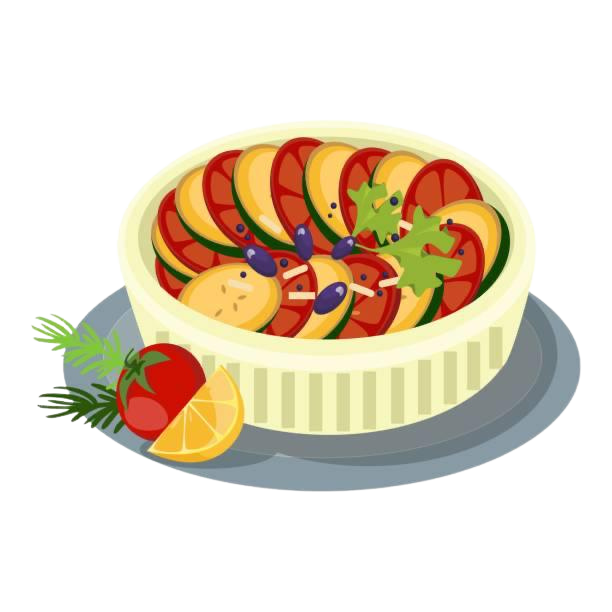

Ratatouille Recipe
A vegetable stew featuring zucchini, eggplant, and tomatoes.
Ingredients
For the Vegetables:
- 1 large eggplant, diced into 1-inch cubes
- 1 zucchini, sliced into rounds
- 1 yellow squash, sliced into rounds
- 1 red bell pepper, diced
- 1 yellow bell pepper, diced
- 1 large onion, diced
- 3 large tomatoes, diced (or 1 can diced tomatoes)
- 3 garlic cloves, minced
- 1/4 cup olive oil
- 2 sprigs fresh thyme
- 1 bay leaf
- Salt and freshly ground black pepper, to taste
For Garnish:
- >Fresh basil leaves
- >Grated Parmesan cheese (optional)
Preparation Time
- Prep time: 20 minutes
- Cook time: 45 minutes
- Total time: 1 hour 5 minutes
Instructions
- Prepare the Vegetables:
- Dice the eggplant, zucchini, yellow squash, bell peppers, and tomatoes into uniform pieces for even cooking. Set them aside.
- Sauté the Onions and Peppers:
- In a large skillet or Dutch oven, heat 2 tablespoons of olive oil over medium heat.
- Add the diced onions and bell peppers. Sauté until softened, about 5 minutes.
- Cook the Eggplant and Squash:
- Add the eggplant to the skillet along with another tablespoon of olive oil. Cook for 5-7 minutes, stirring occasionally, until the eggplant softens.
- Stir in the zucchini and yellow squash. Cook for an additional 5 minutes.
- Add the Tomatoes and Seasoning:
- Add the diced tomatoes (or canned tomatoes) to the skillet. Stir in the minced garlic, thyme, bay leaf, salt, and pepper.
- Reduce the heat to low and let the vegetables simmer for 25-30 minutes, stirring occasionally.
- Adjust the Flavor:
- Taste the ratatouille and adjust the seasoning with more salt and pepper if needed.
- Remove the thyme sprigs and bay leaf before serving.
- Serve:
- Serve the ratatouille warm as a side dish or main course. Garnish with fresh basil leaves and grated Parmesan cheese if desired.
Enjoy this wholesome and flavorful Provençal vegetable stew!